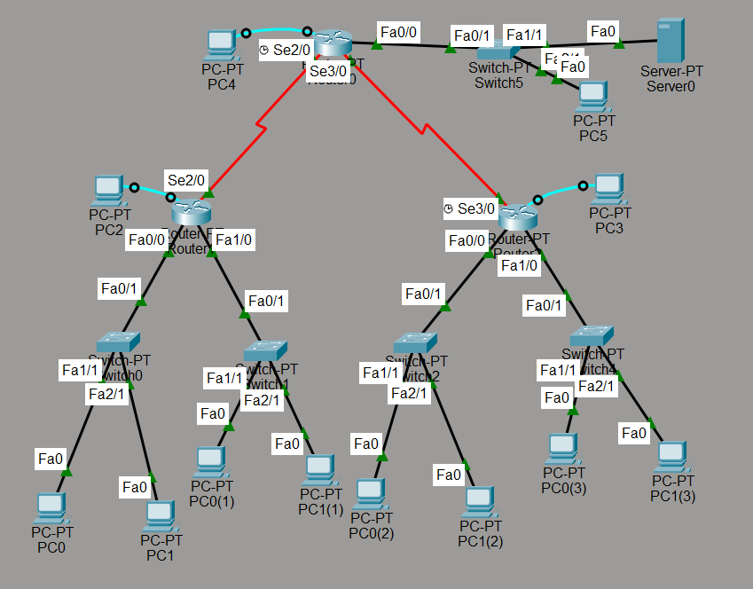
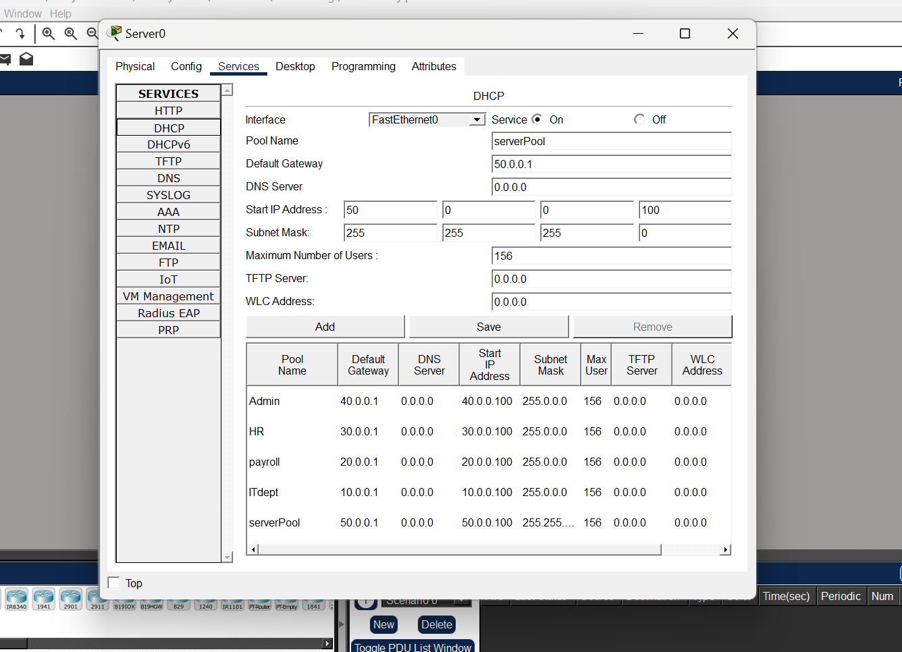

Networking
DHCP Relay Simulation


OVERVIEW
In this project, I engineered a complex network infrastructure using Cisco Packet Tracer to demonstrate the implementation of DHCP Relay Agents across a segmented enterprise environment. The core objective was to centralize IP address management on a single server while ensuring that multiple distinct local area networks (LANs)—each representing a different corporate department—could dynamically receive correct IP configurations across router boundaries.
KEY FEATURES
- Centralized DHCP Management: Configured a dedicated DHCP Server with multiple address pools (Admin, HR, Payroll, IT Dept) to serve unique subnets.
DHCP Relay Integration: Successfully implemented ip helper-address configurations on router interfaces to forward DHCP broadcast discovery packets to the unicast address of the central server.
Routing Protocols: Utilized serial connections (Se2/0, Se3/0) to establish the wide-area network (WAN) backbone between the central hub and departmental routers.
WHAT I LEARNED
- DHCP Relay Mechanics: I gained a deep understanding of how DHCP broadcasts are limited to a single broadcast domain and how to use Relay Agents (IP Helper) to allow clients to reach a server on a completely different network segment.
Network Troubleshooting: This taught me how to diagnose connectivity issues between clients and the server by verifying routing tables and ensuring that the relay agent points to the correct server IP.
Scalable Infrastructure Design: I learned how to build a network that is easy to scale. By centralizing the DHCP server, adding a new department only requires a new pool and a single command on the new gateway, rather than a whole new server.
TOOLS USED
Ciso Packet Tracer